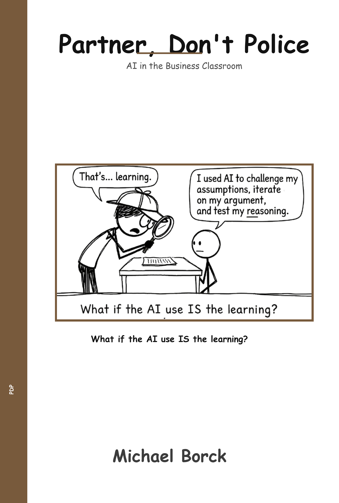

Partner, Don’t Police: AI in the Business Classroom
Preface

Why This Book Exists
The conversation around AI in education has split into two camps, and neither is helping.
On one side: enthusiasm without scrutiny. AI will transform everything, students should use it for everything, and anyone who hesitates is falling behind. On the other: prohibition without understanding. AI is cheating, it threatens academic integrity, and the safest response is to ban it and hope it goes away.
If you are an educator caught between these positions, this book is for you.
I wrote it because the educators I work with are not looking for hype or prohibition. They are looking for practical guidance from someone who understands both the technology and the classroom. They want to know: What can I actually do with this? How do I protect academic integrity without pretending AI does not exist? How do I teach students to use these tools the way a professional would, critically and transparently, rather than as a shortcut around thinking?
Those are the questions this book answers.
Who This Book Is For
You are a business educator. You teach undergraduates or postgraduates in marketing, management, accounting, economics, information systems, tourism, supply chain, human resources, or a related discipline. You are not a computer scientist. You did not sign up to become an AI expert. But AI has arrived in your classroom whether you invited it or not, and you need to make professional decisions about what to do with it.
You may also be a student navigating a landscape where AI tools are everywhere but guidance on using them well is scarce. The frameworks in this book apply to both sides of the classroom.
What This Book Is Not
This is not a technology manual. It does not teach you how to use ChatGPT, Claude, Copilot, or any specific platform. Interfaces change constantly; the principles here do not.
It is not a book of copy-paste prompts. You will find prompts throughout, but they are starting points for conversation, not finished products. If you are looking for a recipe book that removes the need to think about your teaching, this is the wrong book.
It is not a defence of AI, and it is not an attack on it. It does not argue that AI will save education or that it will ruin it. It argues that AI is a tool, that tools require judgement, and that your job as an educator is to develop that judgement in yourself and your students.
And it is not a book that requires you to change everything at once. The most common piece of advice in these pages is: start with one thing, in one unit, this semester.
If You Are Feeling Overwhelmed
You are not alone and you are not behind. Most educators feel some version of the same anxiety: that everyone else has figured this out already, that the technology is moving faster than they can follow, that they might look foolish trying something new in front of students who grew up with technology.
That anxiety is normal. It does not mean you are unsuited to this work. It means you are paying attention.
You may also worry that your students already know more about AI than you do. Some of them might. That is not a problem to solve. It is a resource to draw on. An educator who says “show me how you did that” and learns alongside their students is modelling exactly the kind of professional curiosity that matters in every business discipline.
You do not need to be the AI expert in the room. You need to be the expert in your discipline who knows how to ask good questions, evaluate evidence, and design learning experiences. AI does not change that. It amplifies it.
How This Book Is Structured
The book follows a progressive structure designed to build confidence gradually:
Foundation (Chapters 1–3) builds your understanding of AI and LLMs, introduces structured prompting through the CRAFT framework, and gets you into your first productive AI conversation. No prior AI experience is assumed.
Core Techniques (Chapters 4–7) gives you seven essential prompt techniques, strategies for managing AI context, the flight simulator concept for student practice, and the critique toolkit for teaching critical evaluation.
Teaching with AI (Chapters 8–12) moves into ethics and data governance, process-based assessment, self-assessment tools, virtual company simulations, and full unit design with a phased implementation roadmap.
Putting It Together (Chapters 13–16) covers transforming content with AI, global perspectives and adaptation, implementation practicalities (technical and accessibility), and where to go from here.
Appendices provide institutional alignment frameworks, rubric templates, stress test sequences for validating your assessments, a glossary, and further reading.
You do not need to read it in order. The table below will point you to the chapters that matter most for your situation.
| Your Situation | Start Here |
|---|---|
| Completely new to AI | Chapter 1 (motivation) and Chapter 3 (your first AI conversation) |
| Want to implement AI in teaching | Chapter 4 (essential techniques) then Chapter 12 (unit design with phased roadmap) |
| Designing assessments | Chapter 8 (assessment: process over product) and the Rubric System appendix |
| Concerned about integrity | Chapter 7 (ethics, data governance, and integrity) |
| Need institutional justification | Institutional Alignment appendix |
Conventions Used in This Book
Throughout the book you will encounter coloured callout boxes. Each serves a different purpose.
Chapter-opening quotes appear as indented text like this. They frame the key idea or challenge each chapter addresses.
Green boxes contain discipline-specific examples — prompts, scenarios, or exercises tailored to a particular business field. In the online edition, these appear as interactive tabs covering all eight disciplines. In the print and ebook editions, a single representative example is shown.
Blue boxes highlight important concepts, ready-to-use prompts, or ideas worth pausing on.
Yellow boxes flag common mistakes, weak examples, or things that look right but are not.
Red boxes mark habits or principles that are essential. Do not skip these.
Important Notes
Technology changes rapidly. AI tools evolve quickly. Specific platform names and capabilities described here reflect the state of technology in early 2025. The principles and pedagogical approaches remain relevant even as specific tools change.
Context matters. This book was developed with Australian business programs in mind. If you are teaching in a different institutional or national context, you may need to adapt examples, learning outcomes, and regulatory references. The frameworks are transferable; the specifics may not be.
This is a starting point. Consider this book a foundation, not a complete solution. You will discover what works for your students, your teaching style, and your context through experimentation.
Ways to Engage with This Book
This book is available in several formats. Pick whichever fits how you work and learn.
- Read it online. The full book is freely available at the companion website, with dark mode, search, navigation, and interactive tabbed examples across all eight business disciplines.
- Read it on paper or e-reader. Available as a paperback and ebook through Amazon KDP, for those who prefer to read offline or away from a screen.
- Converse with it. The online edition includes a chatbot grounded in the book’s content. Ask it questions, challenge its answers, and practise the methodology on the methodology itself.
- Feed it to your own AI. The
llm.txtfile provides a clean text version of the entire book, ready to paste into ChatGPT, Claude, or any AI tool for a conversation about the ideas. - Explore the source. The full source is on GitHub, including every chapter, the build system, and the revision history. DeepWiki provides an AI-navigable view of the repository.
- Browse all books. This book is part of a series. See all titles at books.borck.education.
The online version is always the most current. The printed and ebook editions are updated periodically.
The Companion Book
The methodology in this book draws on Conversation, Not Delegation: How to Think With AI, Not Just Use It (Borck, 2025), which covers the full framework in a discipline-neutral way. If you want the underlying rationale for why these approaches work, or you want to share a version with non-educator colleagues, that book is the place to start. This book is independently complete, but the two are stronger together.
All titles are available at books.borck.education.